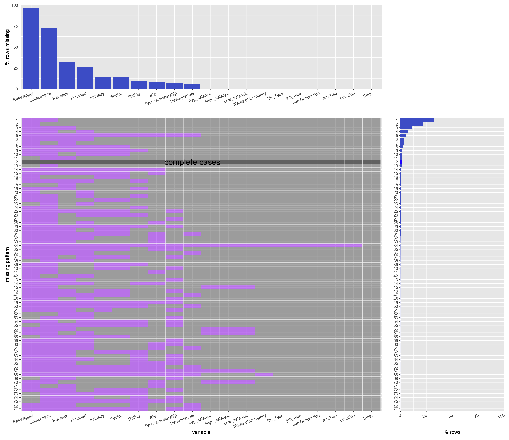
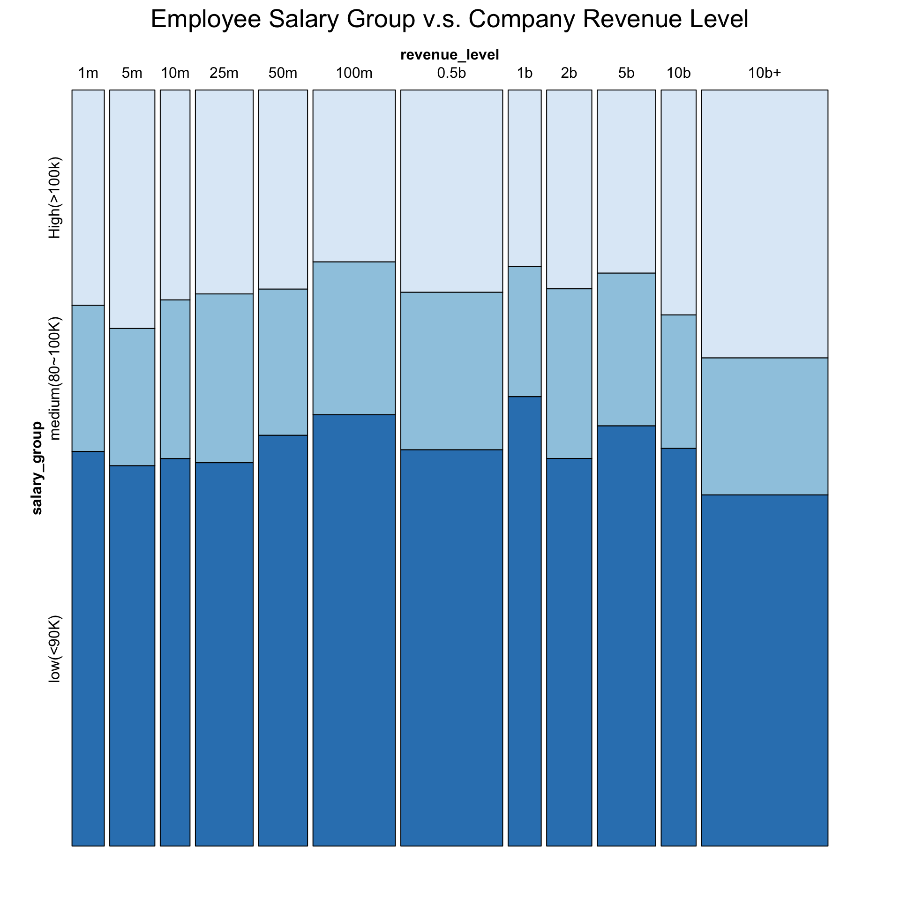
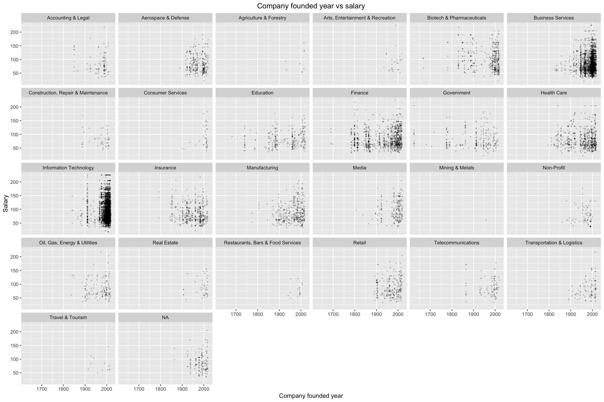
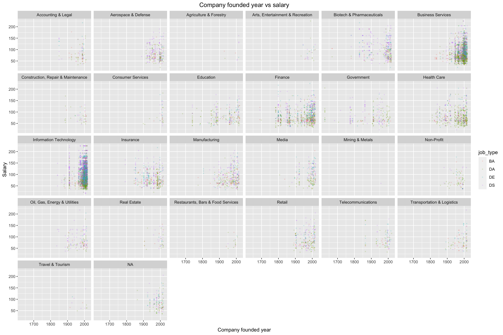

Chapter 5 Results
5.1 Skill set vs salary
###find skill set
5.1.1 draw box plot for skillset vs salary

5.2 draw ridgeline for skill set vs salary

5.3 wordcloud for skillset
5.4 salary vs job title
 This plot compares salary for four job titles, filled with four colors to seperate the job title.
5.5 education vs salary
5.5.1 prepare data for education
#plot based on education vs salary

5.6 company size vs salary 不行！重来

##ridge line for top 10 indutry vs salary
5.6.1 prepare data
5.6.2 plot ridge line for top 10 indutry vs salary

5.6.3 plot box plot for top 10 indutry vs salary

5.7 ridge line for sector vs salary
5.7.1 prepare data
5.7.2 ridge line for sector for

5.7.3 box plot for sector vs salary

###founded year vs salary 
##company vs salary ### parepare data
5.7.4 company vs salary

##rating vs salary wrap up by industry, color by job title